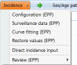
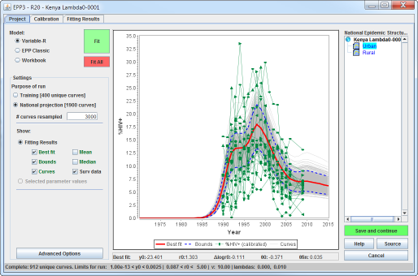
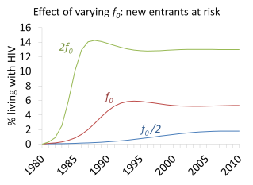

The UNAIDS Estimation and Projection Package (EPP) is a component of the AIDS Impact Module (AIM) of Spectrum. Its primary purpose is to allow national programs to:
This national projection, both incidence and prevalence, is then automatically transferred to Spectrum. The tools in Spectrum can then be used to examine program relevant outputs, e.g., annual new HIV infections, numbers of people currently living with HIV, HIV-related deaths, number of children affected by HIV, and ART need.
For the 2011 round of global estimates, UNAIDS has made a number of important changes to EPP and Spectrum. These include: integration of the Spectrum and EPP programs into a single package with a simpler user interface, improvements in the models used for fitting national epidemics, and a new CD4 model for calculating ART and AIDS mortality. These are intended to make the tools easier for countries to use, allow for all projection related files to be stored in one place, and provide program outputs that are more directly relevant to national policy and priority setting.
In the past, EPP was a standalone program. One would fit the epidemic using EPP and then manually read the results into Spectrum to generate program relevant outputs. However, this division of labor was sometimes confusing to countries and also required them to enter some data more than once. The close integration in Spectrum/EPP 2011 allows for a more holistic user experience, making the entry of data and program inputs, fitting of the epidemic, and generation of program relevant outputs more systematic and easier to follow.
The overall process of applying Spectrum 2011 to prepare a national projection consists of several key steps:
This is all done from the AIM module of Spectrum. These steps are carried out by moving from left to right on the horizontal menu pictured below next to the small red ribbon.
To start EPP, the user selects the “Incidence” item in the horizontal menu, as highlighted in yellow above. This will produce a drop down list of options:

The first three options on the Spectrum Incidence menu, Configuration, Surveillance data and Curve fitting, bring up the three key components of EPP. These will take you through the process of fitting your national epidemic. As with previous versions of EPP, each of the three components consists of two or more pages that systematically step you through the fitting process.
When you click “Configuration” you will bring up the window shown below with two pages. The Define Epi page, shown here, is used to define the geographic area and sub-populations that together make up your national epidemic. The Define Pops page is then used to set the population size for each one. In low-level and concentrated epidemics, turnover, which refers to people entering and leaving the sub-population is also set here if desired. When you are done, click “Save and continue” and EPP1 will return you to Spectrum.
Once you have established your epidemic configuration, you next enter your surveillance and survey data for each geographic area or sub-population by clicking “Surveillance data” on the Spectrum Incidence menu. This brings up EPP2, shown below, which has an HIV Data page and a Surveys page. The HIV Data page allows entry of surveillance data, site by site, for the group highlighted in light blue in the tree on the right; and the Surveys page allows entry of large-scale survey data collected for the group. Click “Save and continue” to return to Spectrum.
The third and final EPP step is to actually fit your data with a curve by clicking “Curve fitting” on the Spectrum Incidence menu. This will bring up a window with EPP3, shown below. EPP3 supports “one button fitting” on the Project page; allows you to calibrate each of your sub-epidemic fits on the Calibration page; and allows you to review incidence and prevalence in your overall national epidemic on the Fitting Results page. When satisfied with the fits, click on the “Save results” button and you will return to Spectrum.

Once back in Spectrum, you can review your sex ratio and age patterns under the Spectrum Sex/Age pattern menu item and then generate your national results with the Spectrum Results menu item.
You may have noticed that there are three other menu items in the Spectrum Incidence menu. These are:
You enter your incidence year-by-year, providing a value for each year of the projection. These values will then be used by Spectrum in place of the results from EPP. If desired, you can also enter year-by-year prevalence values from another model instead of incidence values by selecting Prevalence (15-49) above the data entry row. If you have checked the box “EPP prevalence adjustment” then Spectrum will adjust incidence as needed to reproduce the prevalence coming out of EPP. By default this box is checked.
EPP 2011 includes three different models for use in different situations. The first model, EPP Classic, is the four parameter Reference Group model used in previous versions of EPP. The second model, known as Variable-r, allows incidence to vary from year to year. The final model, known as the Workbook model, is used for fitting results from the UNAIDS Workbook and is primarily used in extremely low prevalence countries where time series for HIV prevalence in key populations are not available. In EPP the first two models are applied independently to each one of the sub-epidemics that make up the national epidemic. These sub-epidemic fits are then summed to produce the overall national prevalence and incidence. In the case of the Workbook model, applied when available data is extremely limited, only one curve is calculated that represents the entire national epidemic.
The EPP Classic model was defined by the UNAIDS Reference Group on Estimates, Modeling and Projections in 2001. The model divides the population into three groups:
A set of mathematical equations with four epidemiologically based parameters are used to calculate the number of new infections in each year. The model then moves these people from the at-risk but not infected group into the group of those living with HIV. For a more complete description of the model see "Improved methods and assumptions for estimation of the HIV/AIDS epidemic and its impact: Recommendations of the UNAIDS Reference Group on Estimates, Modeling and Projections", AIDS 2002 Jun 14: 16(9):W1-14.
The four parameters used by the model are:
The parts of the epidemic curve influenced by each of these parameters are shown in the graph below. The t0 parameter determines when the epidemic begins, but does not affect its shape. The r parameter is most important during the rising phase of the epidemic, while the f0 parameter largely determines the prevalence to which the epidemic rises before it starts decline. Finally the Φ parameter determines what happens after the peak of the curve, with positive Φ producing a flatter curve and negative Φ driving the curve down more rapidly.
The following set of graphs illustrates the effect of changing each one of the Reference Group model parameters on the overall shape and behavior of the epidemic curve.
 |
|
|
The original Reference Group model assumed that the population was closed, that is, people entered at age 15 and only left it by dying. In EPP 2011, however, the population modeled is now 15 to 49 years of age. This correlates more closely with the age range in samples of HIV prevalence collected from surveillance systems. This means that people enter at age 15 and leave the population at age 50. We describe this by saying that there is age turnover.
In some populations, there may also be turnover because people do not remain in a sub-population with higher risk for their entire lives. For example, sex workers often enter sex work at relatively young ages, work for 5 to 10 years, and then return back to the general female population. This has implications for the relationship between HIV prevalence and incidence in a sub-population at higher risk. In general, the higher the turnover, the higher the incidence must be to sustain a given prevalence level. Thus, if 50% of a sub-population at higher risk leaves every year and is replaced by uninfected individuals, then to maintain the same prevalence level, the incidence must be substantially higher. EPP 2011 allows for turnover in any population by having user specify the average time that a person spends in the group. This will be described in more detail on the Define Pops page. A fuller description of the implementation of turnover in EPP can be found in the appendix of the paper: “Improving projections at the country level: the UNAIDS Estimation and Projection Package 2005”, Sex Transm Infect 2006: 82 (Suppl III): iii34-iii40.
As HIV epidemics have run longer and longer, more complex patterns of prevalence and incidence are starting to emerge. While the four parameter Reference Group model worked well for the earlier stages of most epidemics, it cannot reproduce some of the more complex patterns emerging such as that shown below. A number of factors may be contributing to these changes including reductions in risk behavior as epidemics become severe, increases in risk behavior as the severity lessens, changes in behavior as ART availability decreases risk perception, and prevention success, failure and fatigue. However, the EPP Classic model is a fixed parameter model. Once the incidence declines, it can't go back up again.
To be able to fit the more complex trends emerging with long running epidemics, the Reference Group recognized that it needed models that could allow HIV incidence increases and decreases over time. Reference Group members explored new models that could allow incidence to change from year to year. A decision was then taken to use a model known as Variable-r.
In this model the population is divided into only two groups: those who are not infected with HIV and those who have contracted HIV. The number of new infections is then calculated as a “force of infection” parameter, r, times the size of the uninfected population times the prevalence in the population as a whole. But where the parameter r in the original Reference Group model was fixed, in the Variable-r model it can assume a different value in every year, as shown in the figure below.
To fit this model to the observed data, EPP uses these values of r to calculate the number of new infections in each year and then applies HIV-related mortality to calculate the prevalence in each subsequent year. A large number of such curves are generated and tested against the data, and the one best fitting the data is selected as the final curve. The net result is a projection which can reproduce epidemic patterns in which incidence rises and falls as needed to fit the observed prevalence data. For example, the prevalence pattern above was fit by the incidence pattern shown below, which has two separate peaks.
Those wishing more detailed information on this model are referred to the paper “A stochastic infection rate model for estimating and projecting national HIV prevalence rates”, Sex Transm Infect 2010 86: (Suppl II):ii93-ii99.
The final model available in EPP 2011 is known as the Workbook model. There are still some countries with low-level and concentrated epidemics that do not have long time series of HIV prevalence data for many of their at risk populations. Many of these countries continue to use the UNAIDS Workbook. In the Workbook, the user enters ranges in a particular year for HIV prevalence and population size for the most important groups contributing to the epidemic. These are then used to calculate the overall number of people living with HIV and the population prevalence. If the workbook is applied to data from a number of different years, it can produce an approximate trend in national HIV prevalence, as shown in the figure below.
This very limited set of data is far too limited to apply the Variable-r model, so instead it is fit with the EPP Classic model. The net result is a single curve for the national projection, shown here.
EPP estimates the uncertainty around this curve from information provided by the user about the quality of the data. The exact methodology will be described further in the help for the Project page.
The final significant change in EPP 2011 is to introduce the new CD4 compartment model developed by the Futures Institute in consultation with the UNAIDS Reference Group. In this model, when people contract HIV, they are put into CD4 compartments. As shown below, there are 14 CD4 compartments in total, 7 for those not on ART and 7 for those who have initiated ART. The fraction in each compartment that move to a lower CD4 compartment each year and the mortality of those in a given CD4 compartment is estimated from available cohort studies and has been entered into Spectrum. Spectrum then provides this information to EPP along with the number of people on ART, as entered by the user under the Program Statistics menu item in Spectrum. When a person contracts HIV in the model, they are put in either the CD4 > 500 or the CD4 350-500 compartments. EPP then calculates how many of them move between compartments each year and how many die within each compartment.
Summing these compartments gives an estimate of the total number of people currently living with HIV; and totaling up the mortalities in each compartment gives an estimate of the total number of people dying of HIV-related causes.